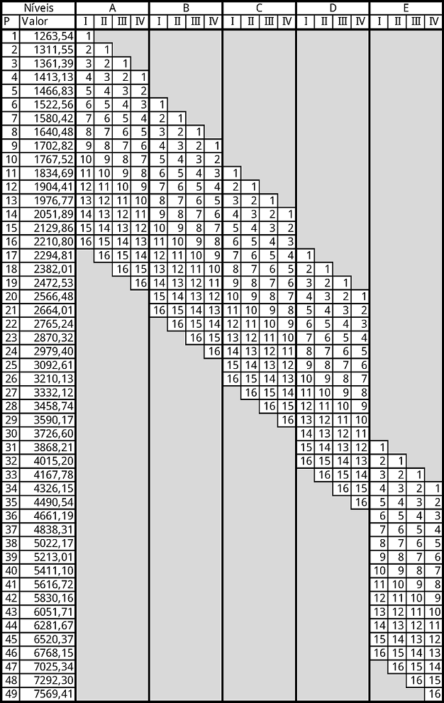
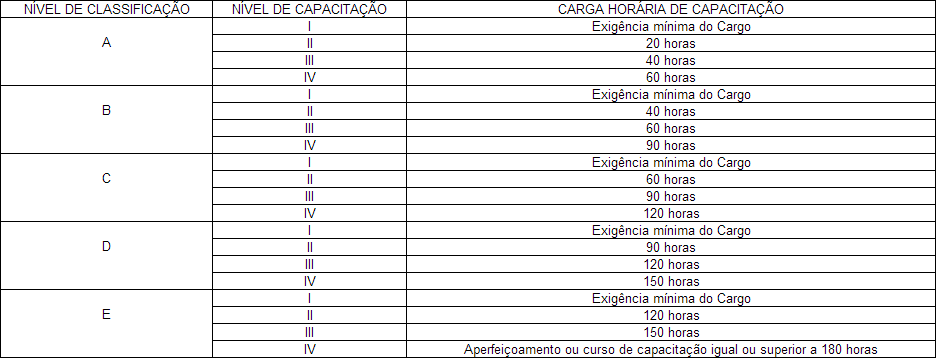
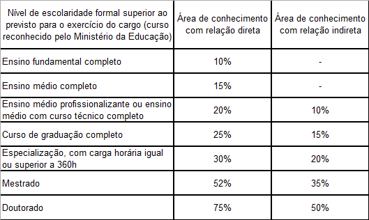
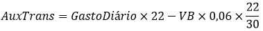
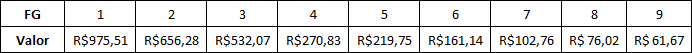
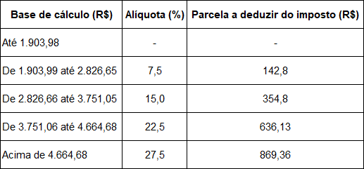
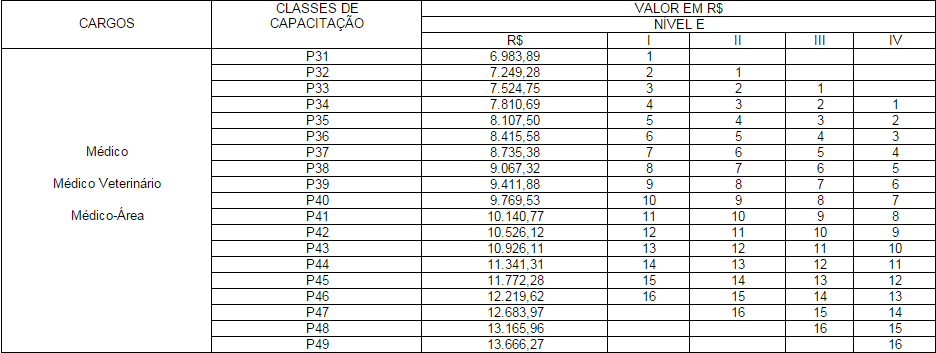

Simulador de Salário dos TAE das IFES
Entender o seu contracheque e ainda saber da onde vieram aqueles números pode não ser muito fácil. Por isso, resolvi tentar explicar mais ou menos como os cálculos principais são feitos. Antes de começar, um alerta: não sou da área de pagamentos, e as informações que escrevi aqui são baseadas no que li na internet ou deduzi sozinho (baseado no meus contracheques e conversando com colegas). Alguns cálculos podem ser um pouco diferentes e alguns valores podem estar desatualizados!
Sumário
- Vencimento Básico
- URP
- Progressão Funcional
- Incentivo à qualificação
- Outros adicionais e auxílios
- Funções Gratificadas/Cargos de Chefia
- Imposto de Renda Retido na Fonte
- Desconto do Plano de Seguridade Social (PSS)
- Previdência complementar - Funpresp
- Médicos e veterinários
- Adicional por tempo de serviço
- Outros
Vencimento Básico
Em primeiro lugar, deve-se observar qual é o seu vencimento básico, de acordo com a matriz do PCCTAE (Plano de Carreira dos Cargos Técnico-Administrativos em Educação), que é regido pela Lei nº 11.091/2005. Veja a matriz em vigor a partir do ano 2017, para 40 horas semanais (clique para ampliar):
As outras matrizes, mais antigas, estão disponíveis no link da lei acima. É possível que haja uma diferença nos centavos dos valores entre a figura e a lei. Isto porque montei a tabela utilizando a fórmula genérica VBPX = PA1 × ((1 + step)X-1), sendo que o cálculo real é feito a partir do valor de P anterior arredondado, levando a uma pequena propagação de erro.
Para se localizar na matriz, é necessário saber três informações:
- Classe: Depende do nível de escolaridade, sendo D para ensino médio e E para superior, e está descrito no edital do concurso.
- Nível: É referente à progressão funcional por capacitação, que pode ser realizada a cada 18 meses com a entrega de certificados com certo número de horas. Mais detalhes abaixo.
- Progressão: Esta é a progressão por tempo de serviço (oficialmente chamada de Progressão por Mérito Profissional), e pode ser avançada a cada 18 meses por no máximo 16 vezes.
De posse das informações acima, pode-se verificar na tabela qual é o piso do servidor. Por exemplo, um servidor Classe E recém contratado (Nível I e Progressão 1) está no P31. Caso fosse Classe D, estaria no P17. A situação do servidor está disponível no contracheque e no portal da transparência, sendo discrimnada a Classe (A-E) e a progressão, na forma de um número (101 significa Nível I e Progressão 1, 202 Nível II e Progressão 2, 416 Nível IV e Progressão 16).
O cálculo dessa matriz é feito da seguinte forma: São definidos, por lei, o piso mínimo da Classe A (R$ 1140,64) e o valor do step (3,7%). Cada valor de P é calculado com um aumento dependente do step, e a posição sempre de acordo com a matriz já estabelecida.
Extrapolação
Seguindo uma ideia do colega Danilo Oliveira, resolvi colocar uma possibilidade de estimar os valores de VB do futuro, de acordo com os aumentos recentes. Depois de alguns testes, resolvi optar pela forma mais simples. Considero para os cálculos um aumento similar ao obtido no acordo de 2015, ou seja, 5% do piso ao ano, e aumento em 0,05% do step ao ano.
Obviamente, não será apenas o VB que irá mudar. A principal fonte de erro desta extrapolação (considerando que esteja correta) é o IRRF, que sofre alteração quase todo ano. Sem a correção do IRRF. Claro que qualquer outro ponto pode ser alterado, incluindo a própria carreira, mas a extrapolação indica o que vem por aí, se as coisas não mudarem muito.
URP
Algumas universidades recebem um adicional chamado URP. A URP é um adicional antigo, cheio de polêmica (por ter sua legalidade contestada pela AGU) e que está aguardando julgamento no STF. Ela é calculada como 26,05% do vencimento básico do servidor, e deve ser adicionada ao vencimento básico nos cálculos de adicional por especialização, auxílio saúde e PSS, mas não é considerada nos cálculos de insalubridade e do IR. O processo judicial relativo à URP (da UnB) está aguardando julgamento no STF desde 2011, e pode ser acompanhado neste link.
Progressão Funcional
A progressão funcional pode ser realizada de duas formas: A Progressão Funcional por Mérito, e a Progressão Funcional por Capacitação.
A Progressão por Mérito Profissional pode ser efetuada a cada 18 meses, desde que o servidor tenha executado as suas tarefas com desempenho positivo, a ser avaliado pela chefia imediata. Após a progressão, o servidor passa para o Piso seguinte da tabela do PCCTAE, ou seja, se estava no P31, vai para o P32.
Já a Progressão por Capacitação é realizada com a entrega de certificados de cursos de aperfeiçoamento profissional, com um número crescente de horas, não cumulativas, para cada nível, como na tabela abaixo. Neste caso, o servidor também passa para o piso subsequente da matriz.
Incentivo à qualificação
O Incentivo à qualificação (IQ), que não é considerado como parte da progressão funcional, é calculado de acordo com o tipo de especialização, levando-se em conta se o estudo foi em área relacionada ao cargo, de acordo com a tabela abaixo, disponível na Lei 12.772/2012.
Adicional de Insalubridade, Auxílios de Saúde, Transporte, Pré-escolar e outros.
O cálculo de cada um destes auxílios ou adicionais é feito de uma maneira. O auxílio alimentação é o mais simples, pois todos servidores recebem R$ 458,00. Nenhum desconto incide sobre este valor.
O auxílio ressarcimento (Saúde complementar) é um benefício indenizatório aos sevidores que possuem plano de saúde particular. O valor deste auxílio é baseado na Portaria nº 625, de 21 de dezembro de 2012, do Ministério do Planejamento, Orçamento e Gestão, e nenhum descondo incide sobre ele. O valor depende da remuneração bruto do servidor e de sua idade, como mostra a tabela abaixo:

O adicional de insalubridade é pago aos servidores que trabalham em ambientes insalubres ou manipulam produtos periogosos. Este adicional pode ser de 5%, 10% ou 20%, de acordo com o grau de insalubridade (mínimo, médio e máximo), segundo a Lei 8.270/1991. As especificações de cada grau ficam escondidas em um documento que não lembro mais qual é pra poder colocar aqui. :) O imposto de renda retido na fonte incide sobre a insalubridade, mas a contribuição ao PSS não.
O auxílio pré-escolar (creche) é pago aos servidores com filhos com idade de até seis anos. O cálculo é realizado baseado no valor-teto, sendo R$ 321,00 desde o início de 2016. De acordo com a faixa de remuneração do servidor, uma porcentagem deste teto é subtraída (veja a tabela). O IRRF também não incide neste auxílio, ou seja, o valor obtido após o cálculo é recebido integralmente, assim como o os auxílios alimentação e transporte.
O auxílio transporte é pago a todos que declararem que utilizam transporte público para ir ao local de trabalho. Seu cálculo é um pouco complicado. Primeiro, deve-se informar o gasto diário com o transporte, sendo que eles valor deve ser múltiplo de 20 centavos. Este valor é multiplicado por 22 (número de dias úteis em um mês "padrão"). Deste valor, subtraise uma alíquota que depende do vencimento básico. Esta alíquota é calculada como 6% do salário referente a 22 dias de trabalho. A fórmula matemática pode ser escrita assim:
 Em função deste cálculo, a partir de um certo vencimento básico, o servidor passa a não receber mais o auxílio, de acordo com o gasto diário.O adicional noturno é pago aos servidores que cumprem carga horária no período entre as 22 horas e as 5 horas do dia seguinte, no valor de 25% sobre a hora paga ao servidor. O cálculo do valor-hora do servidor considera um mês de 30 dias e a carga diária, ou seja, 240h/mês para 8h diárias. Além disso, a hora noturna é contada como 52,5 minutos, o que significa que o total de minutos trabalhados no período noturno deve ser dividido por 52,5 (e não 60, como parece óbvio) para se obter a quantidade de horas extras.
Estes são os auxílios e adicionais atualmente implementados na calculadora. Existem muitos outros, demais para mostrar cada um aqui. Na página do Guia do Servidor (UnB) todos estão listados, mas sem a fórmula de cálculo exata.
Funções Gratificadas/Cargos de Chefia
O adicional de função gratificada é pago aos servidores que possuem cargo de chefia ou de direção em seu setor. As FGs são divididas em 9 níveis, sendo FG-01 a de maior valor, e FG-09 a de menor. Por exemplo, um Assistente de Diretor (de Faculdade, Instituto, etc) é classificado como FG-02, enquanto o Secretário Executivo de determinado centro de custo é FG-03. Os valores são mostrados na tabela abaixo.
Imposto de Renda Retido na Fonte
O IRRF é calculado baseado em uma tabela disponibilizada pela Receita Federal. De acordo com o valor-base (vencimento e outros adicionais em que o imposto incide), uma porcentagem é calculada, e desse valor é subtraído um valor fixo (de acordo com a faixa), sobrando assim o imposto que será descontado. Por exemplo, para R$ 3000,00 de valor-base, desconta-se 15% (R$ 450,00) menos o valor fixo de R$ 335,03, logo, o imposto pago será de 114,97. O valor-base de cálculo e o valor descontado do IRRF são descritos no contracheque, o que facilita sua conferência. Atualmente, esta é a tabela vigente:
Desconto do PSS
A contribuição ao Plano de Seguridade Social é ainda mais simples, pois é calculada 11% da remuneração. Desde Fevereiro de 2013, entretanto, há um valor teto para a base do PSS, fixado atualmente em R$ 5.189,82. O servidor que quiser contribuir com um valor maior (visando uma aposentadoria maior), pode aderir a um fundo de previdência, como o Funpresp - Exe. O PSS é regido pela lei 10.887/2004, e foi modificado (principalmente quanto à criação do Fundo de Previdência Complementar - Funpresp - pela lei 12.618/2012). O cálculo também é baseado em um valor-base que é diferente do calculado para IRRF, mas também vem descriminado no contracheque.
Funpresp
O Funpresp - Exe é uma fundação de previdência complementar para os servidores públicos federais do poder executivo. Basicamente, consistem em uma complementação à contribuição padrão ao PSS, de importância maior quando a remuneração do servidor supera o teto do PSS. A contribuição tem uma contrapartida do governo, e também tem uma característica de investimento. A adesão pode ser feita diretamente pelo Sigepe. Mais informações podem ser obtidas na página da fundação ou com consultores indicados pela instituição.Médicos e veterinários
Os médicos e veterinários possuem matriz salarial diferenciada dentro do PCCTAE. Para a jornada de 40 horas semanais, os valores de janeiro e fevereiro de 2015 são os da tabela abaixo. Para saber os valores atuais, basta multiplicar os valores da tabela comum por 2.
Adicional por tempo de serviço
Este adicional, também chamado de anuênio ou quinquenio, é pago aos servidores que entraram na carerira até o ano de 1999. Calculado como 1% do VB a cada ano de serviço, foi modificado por algumas leis até ser cancelado defintivamente em 1999, sendo mantido para os servidores da época o direto de recebimento do percentual nesta data.
Não tenho certeza quanto ao seu cálculo (em relação à incidência de URP, IQ, IRRF, PSS etc), porém o cálculo deve influenciar uma minoria de pessoas. Se você tiver estas respostas, pode entrar em contato.
Outros
Estas são apenas as ocorrências mais comuns nos contracheques dos servidores, na realidade, muito mais descontos e adicionais existem. As formas de cálculo mencionadas aqui foram baseadas no que encontrei na legislação na internet, mas podem diferir em alguns pontos do método verdadeiro.
Para informações oficiais, acesse procure a reitoria de sua instituição. Muitas informações são disponibilizadas no próprio site da IFES, como o Guia do Servidor, na página do DGP/UnB. Em caso de dúvidas ou problemas com seu contracheque, entre em contato pelos meios oficiais com o setor apropriado. No caso da UnB, o Decanato de Gestão de Pessoas.